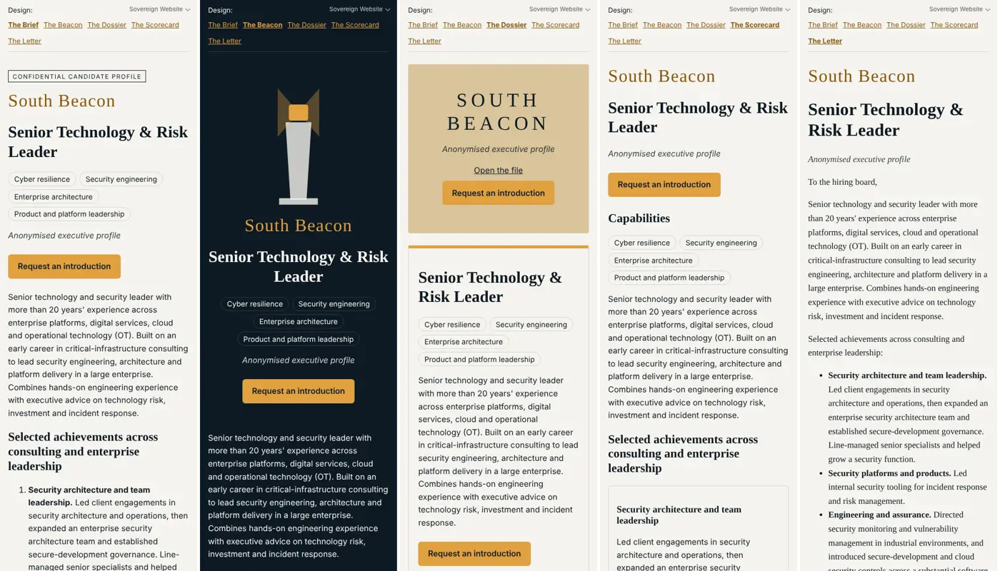
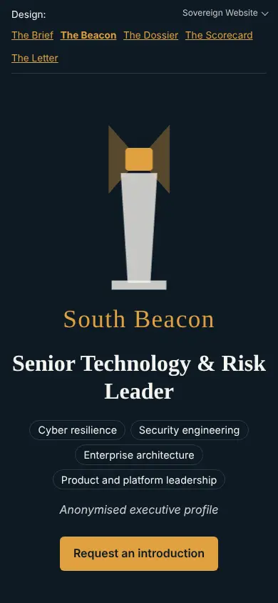

Synthetic users: South Beacon, round 1
Site: https://south-beacon.talent.sovereignweb.site/ at 53ed671 to d745cf5 (v0.1.1 to v0.1.3; the two later commits change only the introduction form, so the five designs are the same). The home page is The Brief. Run: 21 November 2026, about 14:45 UTC, by design.b.rounds. Look score: 2.8 (3, 3, 3, 2, 3). Best design votes: Brief, Scorecard, Letter, Beacon, Dossier, one each. Nobody said "wow". The review.
Method: Synthetic users. One agent played all five personas, in its own folder: - a phone visitor in a hurry; - a hiring manager (a CISO looking for a deputy); - a low-vision reader; - a design critic; - an executive search consultant.
These are simulations, and never replace the measured checks or a real person. The critic saw "v0.1.1" on two designs and "v0.1.2" on the others: the captures straddled a deploy. Every page now says v0.1.3.
| Persona | Look | Best | Weakest | The one change |
|---|---|---|---|---|
| Phone visitor | 3 | Brief | Letter | "hide the design switcher behind one small control so the facts start at the top" |
| Hiring manager | 3 | Scorecard | Beacon | "fill in what the candidate is looking for (level, region, remote or on-site, timing)" |
| Low-vision reader | 3 | Letter | Scorecard | "remove the duplicated text and buttons" |
| Design critic | 2 | Beacon | Scorecard | "give each design its own structure and hierarchy, not just new styling" |
| Search consultant | 3 | Dossier | Letter | "add banded facts (team size range, budget band, region, target level)" |
Agreed by three or more
- "What the candidate is looking for" says only "A new role".
- Repeated text: the anonymity sentence is read twice in a row on every page (the introduction section, then the footer), and the Beacon and Letter end with two or three introduction prompts.
- The design switcher and "Sovereign Website ⌄" take the top of every page, and say nothing about the candidate.
- The achievements give no scale: no team size, no budget, no ranges.
- The Letter has no button on the first phone screen.

